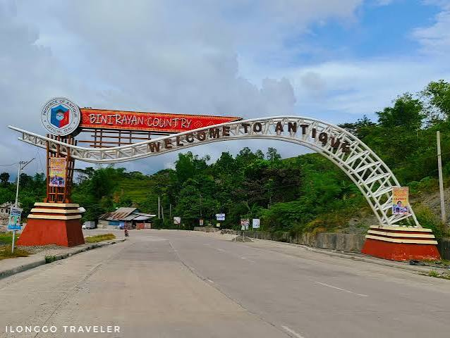
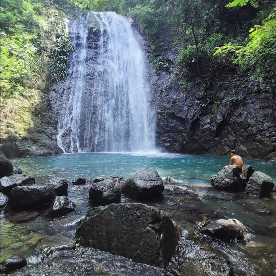
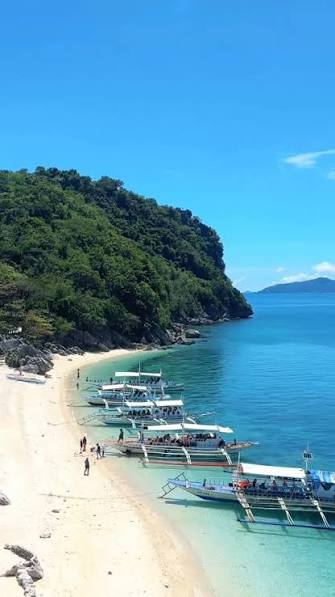

Mararison Island
Culasi, Antique
Island Adventure
Explore breathtaking islands, waterfalls, mountains, and natural attractions in the Province of Antique.
Four places to start your trip.
Culasi, Antique
Island Adventure
Tibiao, Antique
Hiking & Adventure
Pandan, Antique
Nature & Swimming
Anini-y, Antique
Island AdventureExperience nature, culture, relaxation, and adventure in one province, from island beaches to mountain-fed springs.